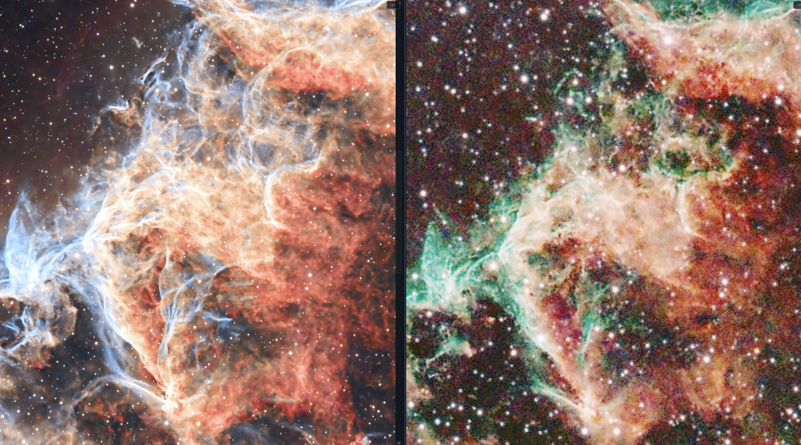

NebulaScope — User Manual
Version 0.94. This is the complete guide; for a quick start see the README. Every keyboard shortcut named here is a default — all of them are reconfigurable in Preferences ▸ Shortcuts (stored in shortcuts.ini, whose location is shown in the dialog).

1. Opening images
Formats read: FITS (.fits .fit .fts .fz, including multi-HDU files and tile-compressed images; integer data are scaled via BSCALE/BZERO), PixInsight XISF (.xisf, including image properties and astrometric solutions), and JPEG / PNG / TIFF / WebP. Everything is promoted to 32-bit float on load, so the full pipeline is one code path; NaN/Inf blanks are respected throughout.
Ways to open: - File ▸ Open… or the toolbar Open button (multi-select works). - Drag & drop onto the window — or onto the app icon (macOS; the bundle declares the file types, so Finder’s Open With also lists NebulaScope). - File ▸ Open Recent — the last 10 images and last 5 annotation files. - Command line — see §13. - Multi-HDU FITS appear in the image list as an expandable entry, one row per image HDU; click the HDU you want.
A newly opened image displays immediately — in the first empty view cell if the view is split, otherwise in the active view. Opening several images fills the empty cells in the order given (command line, Finder selection, dialog), one image per cell, until the cells run out. The list holds each image once: re-opening a listed image selects its existing row instead of adding a duplicate (the status bar notes it). On first view an image gets a plain min→max linear ramp (predictable, no guessing); press Auto STF for a boosted stretch (§3). Exception: an XISF that carries the producing application’s saved screen stretch (the DisplayFunction element — PixInsight writes its STF there) opens with that stretch applied, so a PI-processed image looks the way it did on PI’s screen; the status bar notes it, and Reset returns to the plain ramp. A white point beyond the data maximum (PI’s convention places it on the normalized [0,1] container) is rebased onto the data range in closed form — identical curve over the data, up to a uniform brightness scale — so the histogram handles and value boxes remain fully usable (derivation in the Colour Transport chapter’s appendix: the MTF family is closed under restriction-and-renormalisation). If the saved STF is unlinked (strongly per-channel — it equalizes the channels, visually cancelling a calibrated colour balance such as SPCC’s), the status bar says so and suggests Shift+U, the linked auto-stretch that preserves the calibration.
One-shot-colour (OSC) frames are debayered automatically. A mono frame whose header carries a Bayer pattern (BAYERPAT, honouring XBAYROFF/YBAYROFF — written by ASIAIR, ASICAP, NINA, SGP, …) opens as RGB. Image ▸ Debayer controls it per image: Auto-Detect, a forced pattern (for frames with missing or wrong keywords), or Off to inspect the raw mosaic. The algorithm is a global choice — in the same menu or in Preferences: RCD (default; directional, best on stars — validated against Siril’s RCD), Bilinear, or Superpixel (each 2×2 cell becomes one RGB pixel: half size, zero artifacts, fastest). Debayer changes (pattern mode or algorithm) are undoable (⌘Z). Debayering happens at load — the status bar notes the decision (e.g. debayered RGGB, RCD), the Info panel records it, and auto-reload (§7) and per-image stretch memory compose with it naturally.
Mosaics with no metadata at all — planetary/solar capture tools (FireCapture, SharpCap, …) can dump the raw sensor mosaic into plain grayscale PNG or TIFF, where no header will ever announce a Bayer pattern. NebulaScope sniffs the pixels: a mosaic betrays itself statistically (immediate neighbours differ far more than same-colour neighbours two pixels apart, and the two green sites agree on one diagonal of the 2×2 cell). When a metadata-less mono image looks like an undecoded mosaic, the status bar says so and names the two candidate patterns that fit the detected green diagonal — red versus blue can’t be told apart without knowing the scene, so pick the one that looks right (the wrong twin shows a blue Sun). Since one capture stream comes from one sensor, Image ▸ Debayer ▸ Apply Choice to All in List then stamps your forced pattern onto every listed frame in one action (scripts: debayer bggr rcd all).

The capture session this feature was built for: the total solar eclipse of August 12 2026, observed from Spain. The partial phases arrived as metadata-less grayscale PNGs — raw BGGR mosaics that the sniffer flagged on open — while totality itself was captured as FITS with BAYERPAT, decoding automatically. Pink prominences ring the lunar limb; above one of them, a swift crosses the inner corona.


2. The display pipeline
Raw data are never modified by display operations. Each frame goes through:
- Window — per-channel black/white points inside the data range.
- Transfer function — Linear (with midtone), Log, Asinh, or GHS, applied at full float precision across the window (all 4096 LUT samples and all output levels span the window — no posterization however narrow it is).
- Adjustments — post-stretch tone & colour controls (§4).
- Colormap (mono images) — false-colour lookup.
- Dithered 8-bit conversion — removes banding in smooth gradients.
Rendering is asynchronous: dragging any control stays fluid, the image catches up at render rate (intermediate positions are skipped, never queued).
3. Histogram & stretch control
The Histogram panel (toggle F3) is the heart of the tool:

- Stretch functions — tabs for Linear / Log / Asinh / GHS (keys: I / L / S / G).
- Linear acts as the windowing stage: drag B (black), M (midtone), W (white) directly on the plot. RGB images additionally show each channel’s own B/M/W as thin coloured lines — grab one in the plot body to move that channel alone; the labelled grips on the top strip move all three together.
- Log and Asinh compose with the linear window; the plot zooms into the window so their controls use the full widget width.
- GHS (Generalised Hyperbolic Stretch): D (strength) and b (local focus) sliders, plus draggable SP (symmetry point — where contrast is concentrated) and LP/HP (shadow/highlight protection) handles, all defined inside the window like the other nonlinear modes.
- Channels — RGB (linked) or individual R / G / B chips.
- Editable value boxes — exact numeric entry; RGB images get a full 3×3 grid (R/G/B × Black/Mid/White) in raw data units.
- Log axis button toggles logarithmic frequency scaling of the histogram.
- Auto STF (U) — per-channel automatic stretch (background → ~0.25).
- Auto STF (linked) (Shift+U) — one shared stretch from pooled statistics; preserves colour balance (use for colour-calibrated data).
- Reset (R) — back to the plain linear window (also clears adjustments).
- Reload Original (⌘⇧R, View menu) — fresh decode from disk with the first-view rules re-run (saved display function if the file carries one, else the plain ramp), forgetting this image’s stretch memory: the image is exactly as if NebulaScope had just been started and it opened.
- Every stretch and adjustment gesture is undoable (⌘Z): edits coalesce into one history step per gesture, so the history walks back to the as-loaded state — through Auto STFs, pastes, transport fits, and Reload Original itself.
- Apply to All (Shift+A) — share the current stretch (+ adjustments) with every image in the list: each one applies it as it loads. Made for same-acquisition-session batches — set up one frame, share, then blink through the rest. From the command line:
--shared-stf(auto-stretch the first image, share with all); in scripts:stfall. For a subset — or for normalized pasting that re-anchors on each image’s own statistics — use Copy Stretch, select images in the list, and right-click ▸ Paste Stretch. - The colorbar legend shows the current transfer over the window, with ticks in real data units; it follows the active colormap and the adjustments — what the bar shows is what a pixel of that value looks like.
Copy/paste stretch (Stretch menu; ⌘⌥C / ⌘⌥V): copies the full stretch. Pasting Normalized re-anchors the window on the target’s own median/MAD statistics (right for comparing different exposures/filters); Absolute carries the exact data-unit window.
Per-image stretch memory — every image remembers its last stretch (and adjustments) and re-applies them when you return to it.
4. Adjustments (post-stretch)
The ADJUST section sits under the stretch controls — always visible, in every stretch mode, with its own Reset (stretch untouched). All twelve apply to the stretched display values, so they compose identically with Linear/Log/Asinh/GHS:

| Left column | Right column |
|---|---|
| Bright | Contrast |
| Highlights | Shadows |
| White pt | Black pt |
| Gamma | Temp |
| Tint | Hue |
| Saturation | Vibrance |
- Tone (Bright…Gamma): per-channel curves, pinned at black/white ends where sensible; reflected live in the transfer-curve overlay.
- Colour (Temp…Vibrance): RGB images only. Vibrance is saturation weighted toward muted pixels — it boosts nebulosity without clipping star colour.
- Click a slider, then use the mouse wheel for fine steps (hover alone never edits).
- Adjustments are per image — reset on first visit, remembered per image in-session, and persisted in the annotation sidecar (§9) together with the whole display state; a sidecar restores the exact look on the next session’s first view.
5. Colormaps (mono images)
Gray, Heat, Viridis, Magma, Inferno, Cividis — plus SAOImage DS9’s classic palettes (a, b, bb, he, cool, rainbow, standard, and the stepped i8, aips0 and sls), reproduced from DS9’s reference control points so renditions match DS9 exactly. All selected in the toolbar; scripts: cmap <name>. Two composable modifiers work with every map:
- inv() — full inversion.
- split(t) — below threshold t the map runs inverted, above it normal; excellent for perceiving faint background structure. Threshold adjustable.
RGB images ignore the colormap (the combo is disabled).

6. Inspecting
Mouse (in any view): - Left-drag — rubber-band zoom to the dragged region. - Wheel — zoom at the cursor (Shift+wheel = 5× finer steps). - Right-drag / middle-drag / Shift+left-drag — pan. - Right-click — context menu (§10). - Hover — status bar shows (x, y), raw channel values, and RA/Dec when a plate solution exists.
Zoom commands: Zoom to Fit and 1:1 (key 1) in the View menu and toolbar — and keyboard zoom for mouse-free work: > / < step by 10%, . / , by 3% (both percentages configurable in Preferences), centred on the view. With the image view focused, the arrow keys pan; with the image list focused, ↑/↓ walk the list (blinking itself stays on Space/Shift+Space).
The Info panel (P or F4) shows dimensions, pixel format, per-channel min / max / median / MAD, the FITS HDU structure, and the full header (FITS cards or XISF properties) in a filterable, copyable table.
7. Sessions, blinking & the image list
- Space / Shift+Space — next / previous image, looping. Zoom and pan are preserved across same-size images, so you can blink a small region.
- Shift+L (or F2) toggles the image list; C closes the highlighted images (just the current one when nothing else is selected; closing the last image empties all views). Closing an image frees everything the app holds for it — decoded pixels, per-view copies, stretch memory — so a long culling session doesn’t accumulate RAM. If any image being closed has unsaved annotation edits, one prompt covers the whole batch: Save Annotations writes every affected image’s default sidecar (overwriting), Ignore and Close discards the edits, Cancel aborts the close so you can deal with images one by one.
- List management: + append, − / context-menu Close & Remove from List (same close-and-free as C), drag to reorder, export (⤓) and File ▸ Import Image List… re-load a saved list (one path per line,
#comments, relative paths resolve against the list file).--listdoes the same from the command line. Clear List & Close All (⌥C, View menu or the list’s context menu) empties the list and every view in one stroke. - In-memory results (combine, transport, crop) are marked in the list; Save Data As… — or Save Stretched As… — turns the entry into the saved file (name, sidecars, and per-image state follow, and auto-reload starts watching it).
- Blink culling — every list row carries a keep-check (checked by default). Blink through a session with Space/↓ and hit B to reject the bad frame under your eyes — debayering and live STF editing stay available the whole time, which is exactly what makes this blink different. B and the checkboxes are selection-aware: highlight several rows and B group-toggles them (checks them all; only when every one is already checked does it uncheck), and clicking a checkbox inside a multi-row selection retags the whole selection — a click on an unselected row stays single-row. Then act on the tags from the list’s right-click menu: Check/Uncheck Selected, Sort: Checked First, Move Checked/Unchecked To… (files move with their annotation sidecars, and the list follows them to the new location), and Remove Checked/Unchecked from List. Scriptable as
tag,tagsort,tagremove,tagmove(§13) for scripted culling pipelines. - Auto-reload (View ▸ Auto-Reload Changed Files, default on): when another program — PixInsight, Siril, GraXpert, … — overwrites a listed file on disk, NebulaScope re-decodes it automatically (in every view that shows it, active or not). Stretch memory applies to the reloaded data, and zoom/pan survive when the dimensions are unchanged. Keep NebulaScope open beside your processing suite and every save appears as it lands.
8. Geometry: rotate & flip
Image menu / toolbar: - Rotate 90° CW / CCW ( ] / [ ) and Flip Horizontal / Vertical (⌘H / ⌘J) — lossless, exact. - Rotate by Angle… (⌘R) — the rotation dialog: a draggable angle dial (Shift = fine, wheel = ±1°, double-click = 0°), a precision spinbox, and a live preview thumbnail. Apply rotates without closing (for hunting). The angle is absolute: re-rotating always resamples once from the original data, so trying many angles never degrades the image. Bilinear resampling; uncovered corners become blank (NaN). - ⬆ North Up (in the dialog, when plate-solved) — one click sets the angle that puts celestial north up / the central Dec line horizontal.

Everything follows the pixels through every transform: annotations, the astrometric solution (reference pixel + CD matrix), and view-link calibrations. Orientation histories are normalized — rotating back always restores the exact original canvas (expansion borders never accumulate). The orientation is recorded per image (and in sidecars), so an image re-opens the way you left it. Note: after an arbitrary rotation, Save Data As writes resampled pixels — do photometry on unrotated data.
Crop to Visible Region (Shift+C, Image menu; scripts: crop x y w h or crop view): frame the region by zooming — exactly as you would for a screenshot — and crop it into a NEW in-memory list entry at full bit depth; the original is untouched. The plate solution survives exactly: a crop only translates the reference pixel (CRPIX), so the rebased solution is written into the crop’s header as standard FITS cards — even when the source carried it only as PixInsight XISF properties. Annotations translate with the pixels, the current stretch carries over, and Save Data As… writes the result as FITS/XISF/16-bit TIFF. Undoable like any synthetic result.
9. Annotations
A pure vector overlay — never rasterized into the data.

- Draw — toolbar tools: ellipse (drag), line segment (drag; the label sits beyond the start point, never crossing the segment), text (click).
- Edit — click to select (grab handles: axis/endpoint resize, drag body to move), double-click to edit text & colour, Delete to remove, ⌘⇧C / ⌘⇧V copy / paste-at-cursor, full undo/redo.
- Save Annotations & Display (File menu, or the image’s right-click menu) is always available: besides shapes and the rotation/flip history, the sidecar snapshots the entire display state — transfer function, per-channel black/mid/white windowing, GHS parameters, colormap, and adjustments — so “keep this look” is one save. This is how a non-destructive transport fit (§11) is made permanent: the fit lives in the windowing and the adjustments, and both come back on the next open, taking precedence over the auto-stretch rules.
- Show/hide — key A (grid overlay is separate). Loading or importing annotations always makes them visible.
- Invert contrast — right-click menu, for bright fields.
- Persistence — JSON sidecars (
<image>_annotation.json), auto-loaded on open (Preferences toggle). Save overwrites silently; Save As… asks. Sidecars also carry the image orientation and the full display state (displaykey: stretch, windowing, GHS, colormap, adjustments — §4); saving works with no shapes at all. Unsaved annotations warn on quit. (Sidecars from before v0.95 carried adjustments only; re-save once to capture the stretch as well.) Thedisplayblock is an open, documented format: every field maps to an equation, and a standalone reference renderer (tools/render_sidecar.py) reproduces NebulaScope’s rendering from it — see the Colour Transport chapter, §6. - SExtractor import — Tools ▸ Import SExtractor Catalog… reads ASCII catalogs (needs
X_IMAGE/Y_IMAGE; usesA/B/THETA_IMAGEellipses when present), with ellipse scale factor,FLAGSfiltering,CLASS_STARcolouring, andNUMBER/MAG_AUTOlabels. Detections map correctly onto rotated views.
10. Astrometry

Solutions are read from FITS WCS keywords (TAN) and from PixInsight’s PCL:AstrometricSolution XISF properties; unsolved frames fall back to telescope-pointing keywords for approximate coordinates.
- Hover readout: RA/Dec of the pixel under the cursor.
- RA/Dec grid overlay (Shift+G) with labelled, axis-aligned coordinate text (density set in Preferences).
- Right-click menu, grouped readout / annotations / lookup / zoom: copy RA/Dec, copy pixel value, annotate here, paste annotation, Look up in Aladin (opens Aladin Lite framed ~10× the clicked annotation), Identify in SIMBAD (cone search scaled to the annotation), and Point Stellarium Here — drives a running Stellarium (its Remote Control plugin enabled, default port 8090) to the clicked sky position and a matching field of view: where Aladin answers what is this, Stellarium answers where is it in tonight’s sky from my site.
11. Combining images
Combine Channels (Tools ▸ Combine Channels…)
Merges up to 7 mono inputs — R, G, B, S(II), H(α), O(III), L — into a colour image via a linear-combination matrix:

The dialog with three narrowband masters (M1) assigned S/H/O and the live preview.

The created image lands in the first empty view: each channel beside the Hubble-palette result.
- Palette presets: SHO/Hubble, HOO, HSO, LRGB, plain RGB, bicolor.
- Per-channel pre-normalization: median / background-pedestal / min-max / none / As displayed — the last merges each channel through its current view stretch, i.e. exactly what you see is what combines.
- Both luminance modes (proper lightness transfer or linear add).
- Inputs must share dimensions (clear error otherwise).
- Large live preview responding to weight changes; per-channel toggles.
- The dialog remembers its settings; Reset restores defaults.
- The result lands in the first empty view (or the active one), auto-named from the palette; save it with File ▸ Save Data As….
Combine Stars (Tools ▸ Combine Stars (screen)…)
Recomposes a starless image with a stars-only image via screen blending 1 − (1−starless)(1−k·stars) — additive-like in the dark, saturation-safe in the bright:
- Both images RGB (or both mono), same dimensions; picked from the list (auto-guessed from names containing “starless”/“star”).
- Star amount slider (0–150%) scales the stars before screening.
- Runs on each image’s as-displayed rendition; live preview; remembered pairing.
Transport Colors (Tools ▸ Transport Colors from Reference…)
Recolours the current image to match a reference’s colour distribution (sliced optimal transport on the displayed values):
- Distributions are estimated only from the pixels visible in each view — zoom both views onto the object first; off-screen field never steers the match. Saturated pixels are excluded (star cores can’t and shouldn’t match).
- Works across modalities (e.g. borrow an RGB rendition’s palette for an SHO image). Rotated images are handled in the disk frame — no borders are baked. The result is a new display-ready list entry; undoable.
Apply as stretch fit (checkbox in the dialog; scripts: transport <row> [strength] stretch [colour]; a second checkbox Also fit colour adjustments adds a cross-channel stage — temperature/tint/hue/saturation — for hue-rotation matches; full theory in the Colour Transport chapter / docs/TRANSPORT.md): instead of writing new pixels, NebulaScope fits each channel’s Black/Mid/White so the display matches the transported colours — completely non-destructive, so nothing can posterize and noise is never amplified by the mapping. The colour match is close rather than exact (cross-channel rotations lie outside the per-channel stretch family); the status bar reports the per-channel fit RMSE so you can judge. The exact pixel-writing mode remains available for when fidelity matters more than data purity.

12. Split views & linked navigation
View ▸ Split View… — one dialog with rows × columns spinners (max 5×5).

- One cell is active (blue border) — the histogram, info panel, tools, and rotation act on it. Click any cell to activate; then click a list entry to load it there — or simply drag a list entry onto any cell: the cell activates and shows that image (the row stays in the list; dragging within the list still reorders). Each cell keeps its own decoded image, so comparisons don’t re-decode (unlike blinking large files).
- Values in all views (V, View menu; a toggle) — while comparing, hovering the active view shows the coordinates and pixel value(s) under the pointer as a small overlay in every cell, each read from its own data at the corresponding pixel: the same coordinates for same-size or unlinked views, and through the alignment for a calibrated pair, and a small crosshair in every cell marks the pixel being read — the tell-tale when two views are not where you think. Independent of the histogram panel’s readout line (which keeps showing the active view only). Off again with V. (In the overlay layout a floating panel can hide a readout or crosshair; Tab clears them.)
- Automatic linking — cells with images of identical dimensions share zoom/pan. The ⇄ button on each cell opts out.
- Calibrated linking (different sizes) — align the two views manually (zoom/pan/rotate until features match), then tick ⇄ on the second image: the current correspondence becomes the calibration, and from then on the views navigate together, each at its own pixel scale. Calibrations survive rotations and flips of either image.
- Match from plate solutions (M) — when both views carry an astrometric solution (§10), M needs no picking at all: the correspondence is computed — pixel → sky in one image, sky → pixel in the other — sampled over the sky area the two fields share and fitted by an affine map (a projection is not affine, but is to far below a pixel over a few-degree field; the status bar reports the residual). With more than two views, the active view is the anchor and every other solved view matches to it. Unsolved views fall back to features:
- Match from features (M, then Shift+M) — calibrate by pointing instead of by eye. Rough-align the two views, press M, click a star (or any feature) in one view — a crosshair marks it — then click the same star in the other view. One pair snaps the translation exactly (scale and rotation stay as you aligned them). For a full fit, press Shift+M and click a second, different feature in both views: two pairs determine scale + rotation + translation in closed form (four equations, four unknowns — exact on both features, no fitting). The views are calibration-linked immediately; V then shows whether the crosshair lands on the stars everywhere else. Esc cancels a pick in progress; plain M starts over.
--split RxCsets the grid from the command line (§13).

What linked views are for: the same supernova captured by two instruments — a C11 and a 64mm-aperture telephoto lens — compared side by side, each at its own pixel scale. With calibrated linking (⇄) engaged, panning and zooming interrogate both optics at the same sky position.

Two acquisitions of the Eastern Veil (NGC 6992), matched and compared. Left: 5 h with a Vixen 102/900 mm doublet, by a friend. Right: about 1 h with a TS 80/380 mm refractor. The views are matched (M) so the same filaments sit under the same pixels at each instrument’s own scale, and the colours are transported non-destructively (§11) toward the left rendition — so what remains different is signal: integration time and focal length, not processing. The comparison instrument in one frame: computed geometry, untouched pixels, a probe (V) that reads both at the same sky position.
13. Command line
nebulascope [options] [files...]
files Images to open (shell globs, or NebulaScope expands
unexpanded * ? [ patterns itself).
-l, --list <file> Load a saved image list.
--split <RxC> Split the view (max 5x5) and assign the first R*C
images to the cells in raster order.
--shared-stf Auto-stretch the first image and share that stretch
with every loaded image (same-session frames).
--lang <code> Override the UI language for this run (en, fr, or
system). The default is Preferences ▸ Language.
--run list List all script commands (one-line summaries);
detailed help: --help <command>.
--run <script> Execute a command script and exit with the number of
failed assertions (testing/batch; headless with
QT_QPA_PLATFORM=offscreen). Commands: open, show,
next/prev, split, fn, autostf [linked], reset,
adjust <name> <v>, stfall (share stretch with the
whole list), rot90, flip, rotate, export, save,
assert size|channels|pixel|range, sleep,
waitloaded [ms] (block until image + stats ready),
screenshot <file> (grab the whole window to PNG),
cmap <name>, cmapmod invert|split on|off [t],
panels on|off (Image Only toggle),
action <name> (trigger a menu action by its
shortcut-registry name, e.g. toggle_grid; avoid
modal dialogs — they block the script),
debayer auto|off|<pattern> [method] [all] (OSC
demosaic mode for the displayed frame; `all`
stamps it onto every list row),
saveann [path] (write the annotation sidecar with
the full display block), bake <path> (the display
transfer baked as Float32 FITS — the conformance
reference for tools/render_sidecar.py),
tag on|off|toggle, tagsort, tagremove, tagmove
(blink-culling: keep-checks and acting on them),
transport <row> [strength%] (colour transport onto
the displayed image, list row as reference),
dialog rotate|combine|preferences|close (open a
dialog NON-modally for scripted captures),
dlgclick <button text>, dlgcombo <n> <prefix>
(drive the open dialog's buttons / combos),
screenshot <file> dialog (capture the open dialog),
quit — one per line, #-comments; see tests/smoke.nsc.
-h, --help This help.Examples: nebulascope *.fits · nebulascope --list tonight.txt · nebulascope --split 1x2 lum.fits ha.fits. (macOS: invoke the binary inside the bundle, or symlink it onto your PATH — see docs/BUILDING-macos.md. Finder-injected -psn arguments are ignored.)
14. Export
In every save dialog, click any existing image name to adopt its base name — FITS, XISF or picture files alike; the extension always comes from the selected format. Clicking M81.xisf in a PNG export prefills M81, saved as M81.png; with the matching format selected the original name reassembles exactly, for overwriting or re-saving.
- File ▸ Save Data As… — the data (Float32, current orientation): FITS, XISF, or 16-bit TIFF. Saving an in-memory result renames its list entry to the file. XISF interop: float data are normalized to [0,1] (PixInsight’s convention;
NSSCALE/NSZEROkeywords record the original range). Saving FITS preserves metadata carefully: keyword values keep their natural types (numbers stay numeric, not quoted strings), and when a PixInsight-native XISF carries its metadata only as XISF properties, the standard keywords (DATE-OBS, EXPTIME, FOCALLEN, XPIXSZ, RA/DEC, INSTRUME, …) are synthesized from them — units converted where the conventions differ. The XISF compression choice — Zstd (smallest; silently falls back to Zlib if your libXISF build lacks it), Zlib (widest compatibility), or Uncompressed — sits inside the save dialog (enabled when the XISF format is selected); blocks are byte-shuffled for better ratios, and the choice is remembered for the session. - File ▸ Save Stretched As… — bakes the current display transfer (stretch + adjustments) into Float32 FITS/XISF/TIFF. Same XISF compression prompt.
- File ▸ Export View As… (⌘E) — the displayed image (stretched, colormapped): PNG / JPEG / TIFF / WebP. The format options live in the export dialog itself — no follow-up prompts: 8- or 16-bit depth for PNG/TIFF (16-bit is built from the float render — band-free gradients), quality for JPEG/WebP; each enables with the matching format.
- File ▸ Export Zoomed Region As… (⌘⇧E) — same, but only the visible region.
- File ▸ Export / Import Image List… — session round-trip (§7).
- Annotations and adjustments export via their JSON sidecars (§9).
- On macOS the two rich save dialogs are native (
NSSavePanel): the format, depth/compression and quality controls sit in a native accessory row under the file browser — sidebar favourites, iCloud locations and folder behaviours included. Clicking any listed image still adopts its base name, and the saved extension always follows the chosen format. Other platforms keep the equivalent Qt dialog.
15. Layout, preferences & customization
- Overlay layout (default): the image list/info and histogram float translucently over the canvas. O switches to the classic docked layout and back. Panel opacity is a preference — 100% (opaque) is fastest.
- Tab — image-only mode (all panels hidden; Esc exits). Fullscreen on its own shortcut; ⌥F is the green button on a key: native full screen in/out on macOS (menu bar hidden, own Space; on Linux/Windows it maximises/restores). H hides the scrollbars and all view chrome — the active-cell border and link buttons — in every view: a fully clean canvas (pans still work), e.g. to preview a wallpaper rendition in fullscreen.
- Preferences… (application menu on macOS):
- General — interface language (system default / English / Français — applied at the next launch; the
.nscscript language and CLI output stay English, as a locale-independent API); default annotation colour, text size, line thickness; RA/Dec grid density; sidecar auto-load; overlay panel opacity; recent files list sizes. - Shortcuts — every action’s binding, editable; stored in
shortcuts.ini(empty value disables; stale clashes revert). Each entry records the default it was written with (name.default), so when a release changes a default key, bindings you never touched follow the new default while your own customisations are kept.
- General — interface language (system default / English / Français — applied at the next launch; the
- About — version and copyright come from
src/app/AppInfo.h(user-maintained), followed by the exact build id (git describe, e.g.v0.92-3-ga6a8118,-dirtywhen built from uncommitted changes) — so a test binary always says which commit it is. Also on the command line:--version.
16. Troubleshooting
- “No 2-D image in primary HDU” — the image lives in an extension; pick the HDU from the image list entry.
- Washed-out or black view — Reset, then Auto STF; check the window handles aren’t collapsed.
- Adjustment sliders seem inert — colour sliders (Temp…Vibrance) are disabled for mono images; tone sliders work everywhere.
- A colour-calibrated (SPCC/PCC) image looks uncalibrated — per-channel Auto STF (U) equalises the channels, cancelling the calibration’s balance on screen. Use Auto STF (linked) (Shift+U), which preserves it — or save from PI with its STF active: the saved display function is applied on open.
- NebulaScope XISF looks like noise in PixInsight — fixed in v0.84+ (floats normalized to [0,1]); re-save the file. Compressed blocks (v0.86+) are PI-verified and not the culprit.
- RA/Dec missing on an XISF — confirm the file carries
PCL:AstrometricSolution:*properties (Info panel filter:Astrometric). - Annotations misplaced after import — they map through the recorded orientation; if the sidecar predates v0.12, re-orient and re-save once.
- Slow zoom/pan with overlay panels — set overlay opacity to 100% in Preferences (translucency costs repaints).
- Build issues — see
docs/BUILDING-{macos,linux,windows}.md.